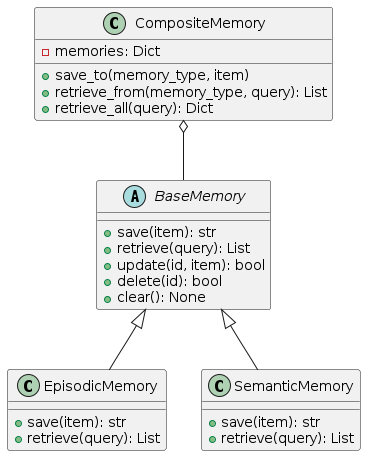

Memory System
The memory system enables agents to store, retrieve, and utilize information across interactions. It provides different types of memory appropriate for different kinds of knowledge and use cases.

Overview
The memory system is designed around cognitive science principles, implementing three primary memory types:
Episodic Memory: Stores experiences and events (what happened)
Semantic Memory: Stores facts and knowledge (what is known)
Procedural Memory: Stores skills and procedures (how to do things)
These memory types are combined through a unified interface that allows agents to seamlessly access and update information.
Core Components
BaseMemory
BaseMemory is the abstract base class that defines the common interface for all memory types:
save(item, **metadata): Store an item in memory with metadataretrieve(query, limit, **filters): Retrieve items matching a queryupdate(id, item, **metadata): Update an existing memory itemdelete(id): Remove an item from memoryclear(): Clear all items in this memory
Each memory implementation provides both asynchronous and synchronous versions of these methods.
CompositeMemory
CompositeMemory is a container that manages multiple memory types and provides a unified interface:
save_to(memory_type, item, **metadata): Save to a specific memory typeretrieve_from(memory_type, query, limit, **filters): Retrieve from a specific memory typeretrieve_all(query, limits, filters): Retrieve from all memory typesupdate_in(memory_type, id, item, **metadata): Update in a specific memory typedelete_from(memory_type, id): Delete from a specific memory typeclear_all(): Clear all memoriesclear_type(memory_type): Clear a specific memory type
Memory Persistence
The MemoryPersistence abstract interface provides storage backends for memory:
initialize(): Set up the persistence layerstore(namespace, key, value, metadata): Store a valueretrieve(namespace, key): Retrieve a value by keysearch(namespace, query, limit, **filters): Search for valuesdelete(namespace, key): Delete a valueclear_namespace(namespace): Clear all data in a namespace
Implementations include:
InMemoryPersistence: Volatile in-process storageFilePersistence: File-based persistent storageVectorStorePersistence: Vector database for semantic search
Memory Types
Episodic Memory
Episodic memory stores experiences, events, and interactions. It’s useful for:
Remembering conversations with users
Tracking tool usage history
Recording action sequences
Storing timestamps and context of events
# Example episodic memory item
{
"timestamp": "2023-06-15T14:32:45",
"content": "User asked about weather in Paris",
"importance": 0.7,
"tags": ["interaction", "weather", "location"]
}
Semantic Memory
Semantic memory stores facts, knowledge, and information. It’s useful for:
User preferences and information
Domain knowledge
Entity relationships
Conceptual information
# Example semantic memory item
{
"entity": "user",
"attribute": "preferred_language",
"value": "Spanish",
"confidence": 0.9,
"source": "explicit_statement"
}
Procedural Memory
Procedural memory stores skills, procedures, and patterns. It’s useful for:
Storing successful solution approaches
Recording tool usage patterns
Remembering effective prompt structures
Saving execution plans for similar problems
# Example procedural memory item
{
"name": "weather_lookup_procedure",
"description": "Process for checking weather by location",
"steps": [
"Extract location from query",
"Call weather_api with location parameter",
"Format response with temperature and conditions"
],
"success_rate": 0.95
}
Implementation Guide
Basic Memory Setup
from agent_patterns.core.memory import (
CompositeMemory,
EpisodicMemory,
SemanticMemory,
ProceduralMemory
)
from agent_patterns.core.memory.persistence import InMemoryPersistence
import asyncio
# Create persistence backend
persistence = InMemoryPersistence()
asyncio.run(persistence.initialize())
# Create memory types
episodic = EpisodicMemory(persistence, namespace="user123_episodic")
semantic = SemanticMemory(persistence, namespace="user123_semantic")
procedural = ProceduralMemory(persistence, namespace="user123_procedural")
# Create composite memory
memory = CompositeMemory({
"episodic": episodic,
"semantic": semantic,
"procedural": procedural
})
Saving to Memory
# Save to episodic memory
asyncio.run(memory.save_to(
"episodic",
{
"content": "User asked about the capital of France",
"importance": 0.6,
"tags": ["geography", "question"]
}
))
# Save to semantic memory
asyncio.run(memory.save_to(
"semantic",
{
"entity": "France",
"attribute": "capital",
"value": "Paris"
}
))
# Save to procedural memory
asyncio.run(memory.save_to(
"procedural",
{
"name": "capital_lookup",
"description": "Process for finding country capitals",
"steps": ["Search for 'capital of {country}'", "Extract city name"]
}
))
Retrieving from Memory
# Retrieve from episodic memory
episodes = asyncio.run(memory.retrieve_from(
"episodic",
"France", # Query
limit=5
))
# Retrieve from semantic memory
facts = asyncio.run(memory.retrieve_from(
"semantic",
"France", # Query
limit=10
))
# Retrieve from all memory types
all_memories = asyncio.run(memory.retrieve_all(
"France", # Query
limits={"episodic": 3, "semantic": 5, "procedural": 2}
))
Integrating with Agents
from agent_patterns.patterns import ReActAgent
# Configure the agent with memory
agent = ReActAgent(
llm_configs=llm_configs,
memory=memory,
memory_config={
"episodic": True, # Enable episodic memory
"semantic": True, # Enable semantic memory
"procedural": False # Disable procedural memory
}
)
# The agent will automatically:
# 1. Retrieve relevant memories before processing
# 2. Save important information after interactions
result = agent.run("Tell me about France")
Advanced Usage
Memory Filtering
# Retrieve with filters
episodes = asyncio.run(memory.retrieve_from(
"episodic",
"question",
limit=10,
importance_min=0.5, # Only items with importance >= 0.5
tags=["geography"] # Only items with the geography tag
))
Memory Updates
# Update an existing memory item
asyncio.run(memory.update_in(
"semantic",
"france_capital_id", # The memory ID
{
"entity": "France",
"attribute": "capital",
"value": "Paris",
"confidence": 1.0 # Updated confidence
}
))
Persistence Options
# File-based persistence
from agent_patterns.core.memory.persistence import FilePersistence
file_persistence = FilePersistence("./memory_data")
asyncio.run(file_persistence.initialize())
# Vector store persistence (requires extra dependencies)
from agent_patterns.core.memory.persistence import VectorStorePersistence
vector_persistence = VectorStorePersistence("memory_vectors")
asyncio.run(vector_persistence.initialize())
Design Considerations
The memory system is designed with these principles:
Cognitive Science Foundation: Models human memory types
Separation of Interface and Implementation: Clear abstractions
Persistence Flexibility: Multiple storage options
Type Safety: Generic type parameters for compile-time checking
Async-First: Native async support with sync wrappers